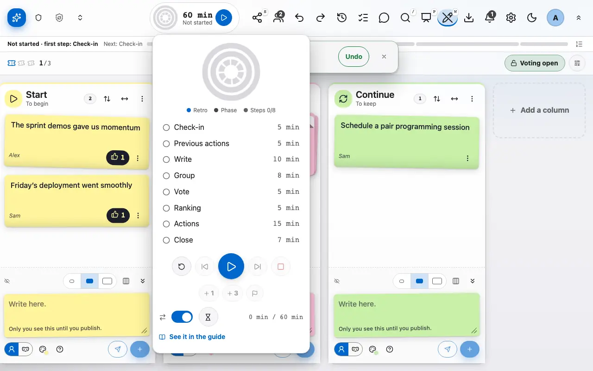
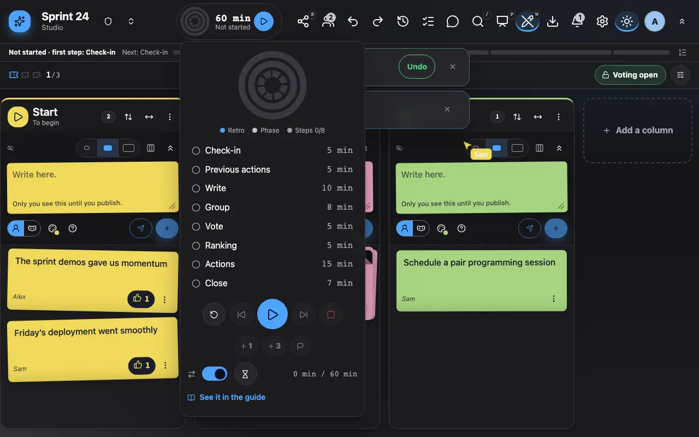
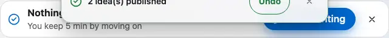

The agenda and the timer
The agenda splits the retro into timed phases.
1 The ring shows the running phase and the time left.
The ring at the top of the board shows the running phase and the time left. It fills up as the phase goes and changes colour when the time is over.
2 The agenda panel starts, skips to the next phase or extends.
Clicking the ring opens the agenda panel: start the retro, move to the next phase, extend the running phase or go back. The phases (check-in, writing, grouping, voting, actions) can be adapted to your retro.


3 With no action to review, a card offers to start writing; going back folds the writing areas.
When the agenda reaches Previous actions and nothing is left to review, a small card says so and offers one button, Start writing, to the people who steer (everyone, when the board lets everyone facilitate). A second, lighter suggestion appears as a toast after a few seconds. Nothing moves by itself: the phase stays until someone presses the button or the agenda moves on. Escape closes the card for the rest of the phase on your screen. When every previous action is already done, the card says so instead of listing finished work.
Going back to a phase before Writing, once ideas exist, folds the writing areas of every column and shows one banner with Show writing areas; your drafts stay on your device. A board option in the advanced options, Hide writing areas when going back, turns this off for everyone.
